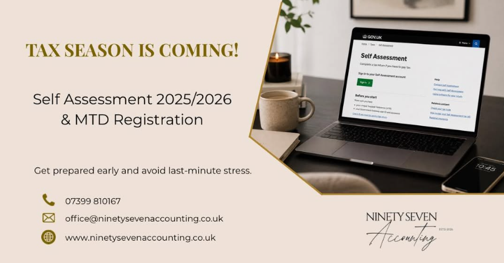

LaAlexia Beauty Salon
Fully built custom web portal mapping localized styling arrays to Laravel systems. Features intuitive scheduling pipelines, responsive content wrappers, and targeted local optimization parameters.

Laravel Task Engine
Engineered dynamically to handle complete backend CRUD operations. Employs clean MVC design frameworks, secure authentication gates, and relational data query pipelines.

TapChat
TapChat is a live Squarespace website I built by transforming user input and mockups into a functional product. I designed and developed the site using the platform’s tools and custom styling, focusing on clean structure, usability, and branding. This project strengthened my understanding of responsive design and the customization options available in Squarespace. I ensured the layout performed smoothly across all devices — from desktop to mobile — and refined my approach to user-first design within a modern website builder environment.

Ninety Seven Accounting
Fully engineered and published a corporate web platform for Ninety Seven Accounting using WordPress. Transformed the client’s service briefs into a clean, modern layout tailored for UK financial regulations. Handled the complete end-to-end production pipeline, including custom domain name configuration, DNS zone management, secure publishing, and optimizing the site structure to capture local business traffic.